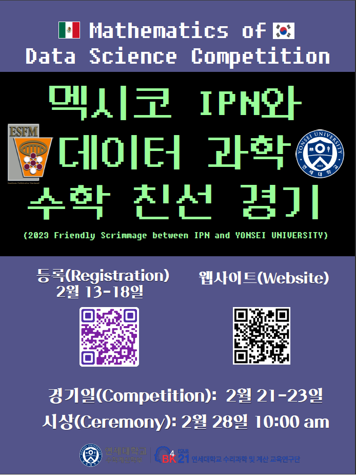
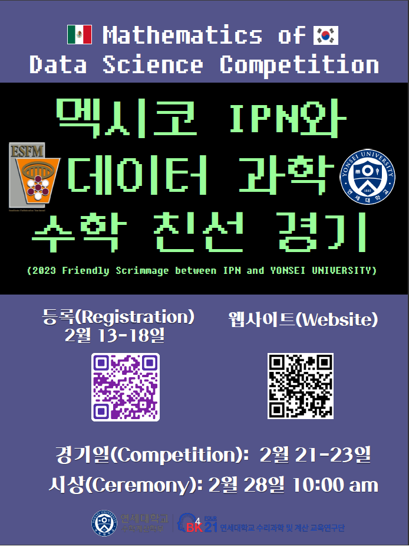

Talks
MATH:
Visiting Yonsei University 12-14 June 2024.
"Científicos Politécnicos Destacados", online participation, Mexico city, Mexico. May 23, 2024.
6th Meeting of Mexican Mathematicians in the World "La óperad de posets 101: Los posets Wixárika" Casa Matemática Oaxaca-BIRS (Banff International Research Station for Mathematical Innovation and Discovery), México, May 6 - 10 2024.
Speaker at ESFM Math Seminar. 12-12:50 'Introducción a las álgebras sobre la operad de posets', 13-13:50 'Series de barajeo y sus aplicaciones a la topología dendroidal'. IPN, Mexico, May 3 2024.
Speaker (online) at Ukraine Algebra Conference At the End of the Year 2023 at Taras Shevchenko National University of Kyiv, 26 till 27 of December 2023.
Invited speaker at Polynomial Mathematics Seminar. 21 December 2023 at Ito campus, Kyushu University, Fukuoka, Japan.
Invited speaker (online) at 6th ICPAM, December 06-07, 2023 University of Sargodha, Sargodha, Pakistan.
Invited speaker (online) at Simposio de Física Matemáticas e ingenieria 2023, Red Global MX capítulo España November 21-23, 2023, online, Spain.
Invited speaker (online) at Wolfram Technology Conference, November 1-3, 2023, online, USA.
Invited speaker at Korean Mathematical Society annual meeting, October 26-28, 2023, Seoul, Korea.
Organizer and speaker at the meeting of the Mexican Mathematical Society:Cruzando el estrecho de Bering.

Online talk at the International Algebraic Conference “At the End of the Year 2022”, Kyiv Ucraine. From December 27 to December 28, 2022.
Visiting Pakistan Oct 15-Oct 27. I talked at the University of the Punjab, Govt. College University Lahore/ Faisalabad, and LUMS University.
55 National congress of the mexican mathematical society / 55 Congreso Nacional de la Sociedad Matemática Mexicana, Los resultados de Ramanujan sobre números Eulerianos y las series de orden, October 23-28 2022, Mexico. Pre recorded talk.<\p>
Invited speaker at The 3rd International Conference on Mathematics and Applications (Icomathapp) August 23-24, 2022, Jakarta, Indonesia.
Acepted on the Latinx in the Mathematical Sciences Conference 2022 hosted by the Institute for Pure and Applied Mathematics (IPAM) at the UCLA campus from July 7-9, 2022.
AMS Special Session on Latinxs in Combinatorics Wednesday 04/06/2022 from 10:30 AM - 11:00 AM Seattle time.
The following two videos explain our work with poset algebras.Below is a presentation I gave at the XIII International Algebraic Conference in Ukraine (July 6-9, 2021, Kyiv, Ukraine)
Versión en español del evento "Interacciones en la Frontera"
Talk at the Wolfram Technology Conference, October 2021. Title: "New Identities in Combinatorics Discovered with help from Mathematica Software"
Machine learning/AI:
Workshop organizer in National Polytechnnique Institute Mexico. "Temas avanzados de ciencia de datos" from November 14 to 18, 2022. Sponsored by the patrimonial chair Ing. Eugenio Méndez Docurro.
Workshop organizer and speaker (in Spanish) at the 5th International Meeting on Artificial Intelligence and its Applications RIIAA 2022 August. Title: "Trained in USA and Used in Latin America: Balancing Between Safety and Surveillance of BIPOC Populations with AI”
What is Machine Learning at Yonsei University.
Workshop (in Spanish) at the 4th International Meeting on Artificial Intelligence and its Applications RIIAA 2021 August. Title: "Métodos para corregir el sesgo/prejuicio en algoritmos" We talked about methods to correct bias on algorithms of ML.
Other:
Speaker at CIC Inteligencia artificial y ciencia de datos Seminar 15-15:50 'Arte y ciencia de datos'. IPN, Mexico, May 3 2024.
2014 pi day: Online Talk at ESCOM, Mexico IPN. "El ciberespacio mexicano"
Organized a math and computer science competition.
 
